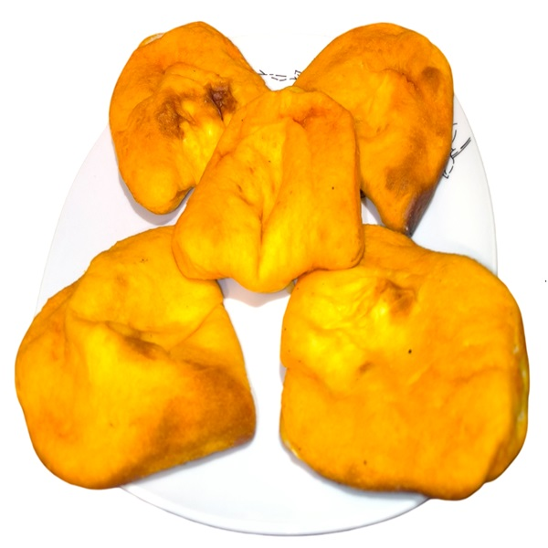

Fun fact about Pucacapas!
Eating a pucacapa can vary greatly depending on the cook, so eating one is sometimes considered a "culinary gamble." Who knows, you might get one with just a hint of spice or one that's unexpectedly strong!

-
List of ingredients
-
Dough:
- 2 cups flour
- 3 teaspoons baking powder
- ¼ teaspoon of bicarbonate of soda
- 2 tablespoons sugar
- ½ teaspoon salt
- 2 tablespoons butter, at room temperature
- 2 egg yolks
- ½ cup milk
-
Filling:
- 1 teaspoon vegetable oil
- ½ minced onion
- 1 tablespoon minced quirquiña (you can substitute it with curly leaf parsley or coriander)
- 2 chopped chillies
- 1 cup shredded cheese (mozzarella, or some kind of sharp cheese)
- 6 black olives
- ¼ teaspoon chilli pepper
- 2 tablespoons vegetable oil
And to give the pucacapas their traditional reddish colour:
-
-
Pre-preparations and tips
-
Prepare the ingredients for the dough:
- Make sure you have measured and gathered all the mentioned ingredients beforehand
-
Prepare the eggs:
- Separate the egg yolk from the white ahead of time.
-
Prepare a surface for kneading
- Ensure the surface is floured and ready for kneading before the dough is prepared. This might be the same place where you will roll out the dough so have a rolling pin ready
-
Prepare ingredients for filling
- Chop the onion, quirquiña, and chili pepper in advance
-
Set the oven
- Preheat the oven and prepare a baking tray
-
Prepare covering mixture
- Ground the chilli pepper and mix it with oil in advance for brushing
-
-
Preparation
-
Dough preparation
- In a large bowl, add the flour, baking powder, bicarbonate of soda, sugar, salt, and butter. Mix with your hands until it resembles large crumbs. Add the egg yolks and mix. Add the milk, mixing until all the ingredients have incorporated.
- On a floured surface, knead until the dough is smooth (2 to 3 minutes). Divide the dough into 12 equal portions. Using the palms of your hands, form balls. Cover with a tea towel and let it rest for 20 minutes.
- Roll out each ball into a disc about 12.5 centimeters in diameter. Cover with a tea towel.
-
Filling preparation
- In a frying pan, heat the oil and sauté the onion until translucent. Add the quirquiña and minced chilli pepper. Cook for 1 minute and allow to cool completely.
- In a medium bowl, beat the egg whites until stiff. Add the cheese and onions (make sure they are not hot).
-
-
Cooking
-
Assembling
- Put an empanada disc on a flat surface. Add 1½ to 2 tablespoons of filling (leaving 1 centimetre of space on the edges) and an olive in the middle. Cover with another empanada disc. Press the edges.
- To close them, you can use the tip of a fork or make a repulgue.
- Brush each empanada with a mixture of ground chilli pepper and oil.
- Heat the oven to 180°C. Bake the pucacapas for 20 minutes.
-
-
Cultural Importance
Pucacapas are more than just food, they are a reflection of Bolivia's rich cultural heritage. They embody the fusion of Spanish baking techniques (introduced during colonial times) with indigenous flavours and ingredients, such as quirquiña and native cheeses. Their enduring popularity across generations highlights their place as a beloved symbol of comfort, tradition, and culinary pride.